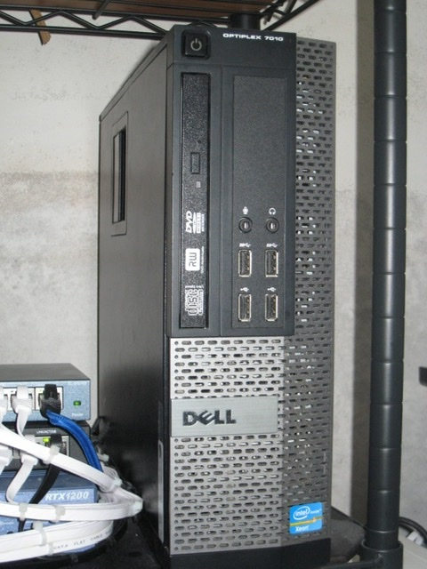

サーバー
これがサーバー本体です。さすがにラックサーバーとかではないです。一応Xeon入ってますけどね。一応（ココ重要）
ネット環境
ネット回線はソフトバンク光を使ってます。ネット機器はVPNルーターがあります。それだけです（）
スターのホームページ
これがサーバー本体です。さすがにラックサーバーとかではないです。一応Xeon入ってますけどね。一応（ココ重要）
ネット回線はソフトバンク光を使ってます。ネット機器はVPNルーターがあります。それだけです（）